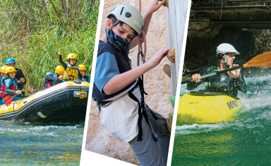
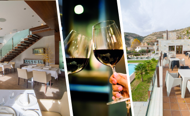
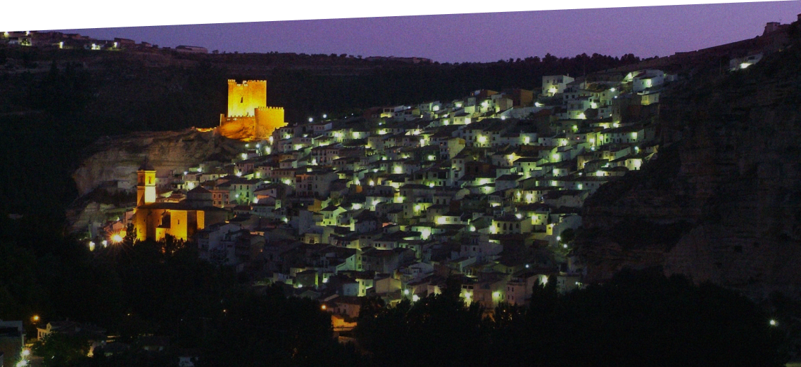

¿Vacaciones en familia o con amigos?
Tenemos las mejores Casas Rurales para vosotros, ideales para familias y grupos de amigos. Tenemos las mejores
Casas Rurales para vosotros, ideales para familias y grupos de amigos. Las Casas cuentan con capacidad para 8
personas y espacio para tu mascota.¡Tráetela!
Además, disponen de terraza, piscina, zona de barbacoas, parque infantil, parking… y si quieres un pack con multiaventura, te lo montamos, tenemos la empresa de deportes de aventura más grande y divertida de Alcalá del Júcar.
¡Ya tienes destino para estas vacaciones!
¿Escapada en pareja?
El Hotel Spa Elia **** es el favorito para las escapadas en pareja.
Relajaos en las habitaciones con
terraza y disfrutad de las vistas espectaculares al conjunto histórico de Alcalá del Júcar.
Y por la mañana…
¡Desayuno buffet incluido en el precio!
Para completar la escapada romántica, podéis desconectar en el Spa del Hotel Spa Elia. Y es que la magia, el diseño y la luz natural, logran que el Spa Elia sea considerado como el mejor Spa de Albacete.
Turismo rural de lujo
Si quieres vivir el turismo rural de lujo y tener una escapada única y especial, no puedes perderte la Finca
Los Olivos.
Un concepto totalmente diferente, con casas rurales de lujo y suites para disfrutar de una estancia rural
exclusiva: piscina, pistas de pádel, barbacoas, embarcadero, kayaks, spa, restaurante…
Disfruta del jacuzzi privado!

Te organizamos todas las actividades
Si quieres tener unas vacaciones completas, encuentra la actividad perfecta en Multiaventura Los Olivos
y vive una experiencia inolvidable.
Alcalá del Júcar es un destino ideal para realizar todo tipo de actividades al aire libre: rafting, kayaks,
barranquismo, paddle-surf, paintball, parque de cuerdas, escalada… ¡Y para todas las edades!
Aprovecha los paquetes personalizados y completa tu escapada
¿Ya sabes cuál es el restaurante Nº1 de Alcalá del Júcar?
Dentro de la Finca Los Olivos, podrás encontrar el increíble
Restaurante Elia dirigido por los chefs
Luís Sánchez y Lucía Cambronero.
Considerado como el mejor restaurante de Alcalá del Júcar y el tercero
en la provincia de Albacete , es el lugar perfecto para degustar la cocina más exquisita de la Mancha.
¿A que esperas para probar el Restaurante Elia?
Descubre
Alcalá de Júcar
No es casualidad que desde hace años Alcalá del Júcar aparezca en casi todas las listas de los pueblos más bonitos de España. En 2012 fue nombrado el 2º pueblo más bonito por una prestigiosa revista y desde hace años aparece en el TOP 5 de los pueblos más buscados en el portal Escapada Rural.
